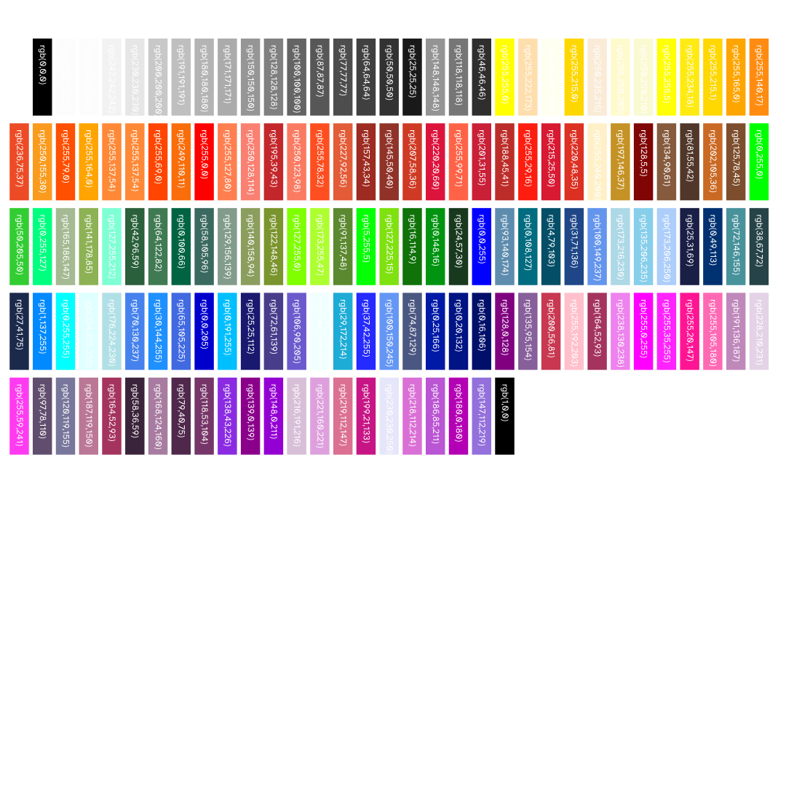
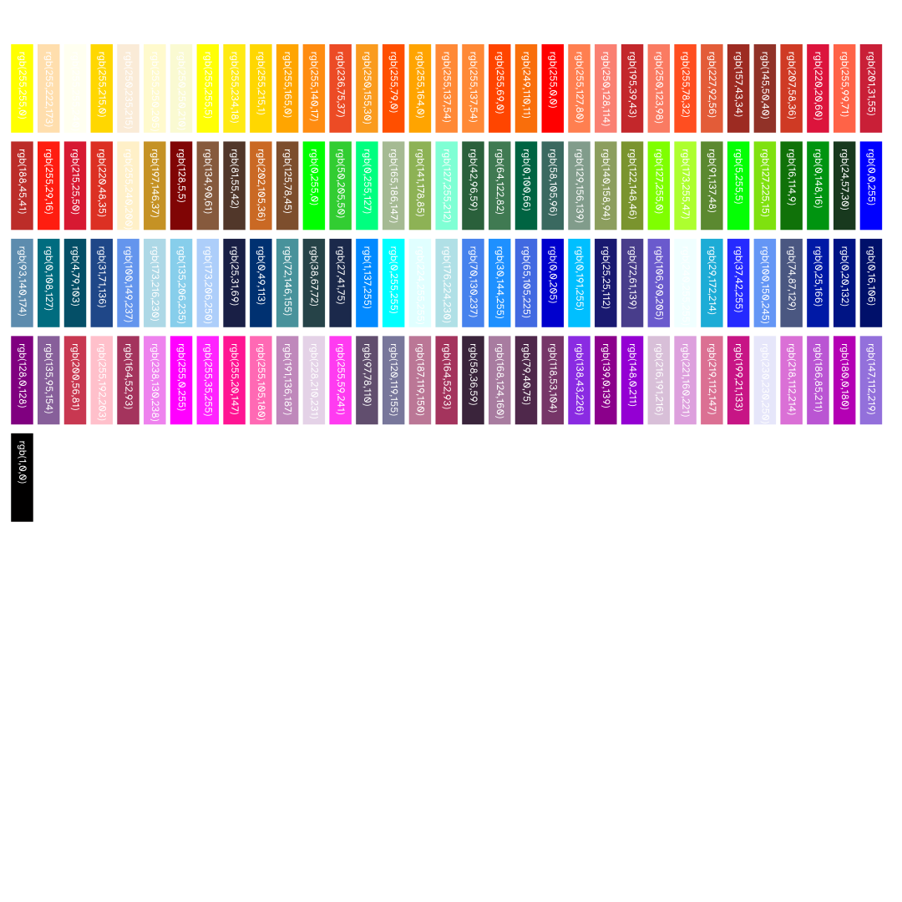
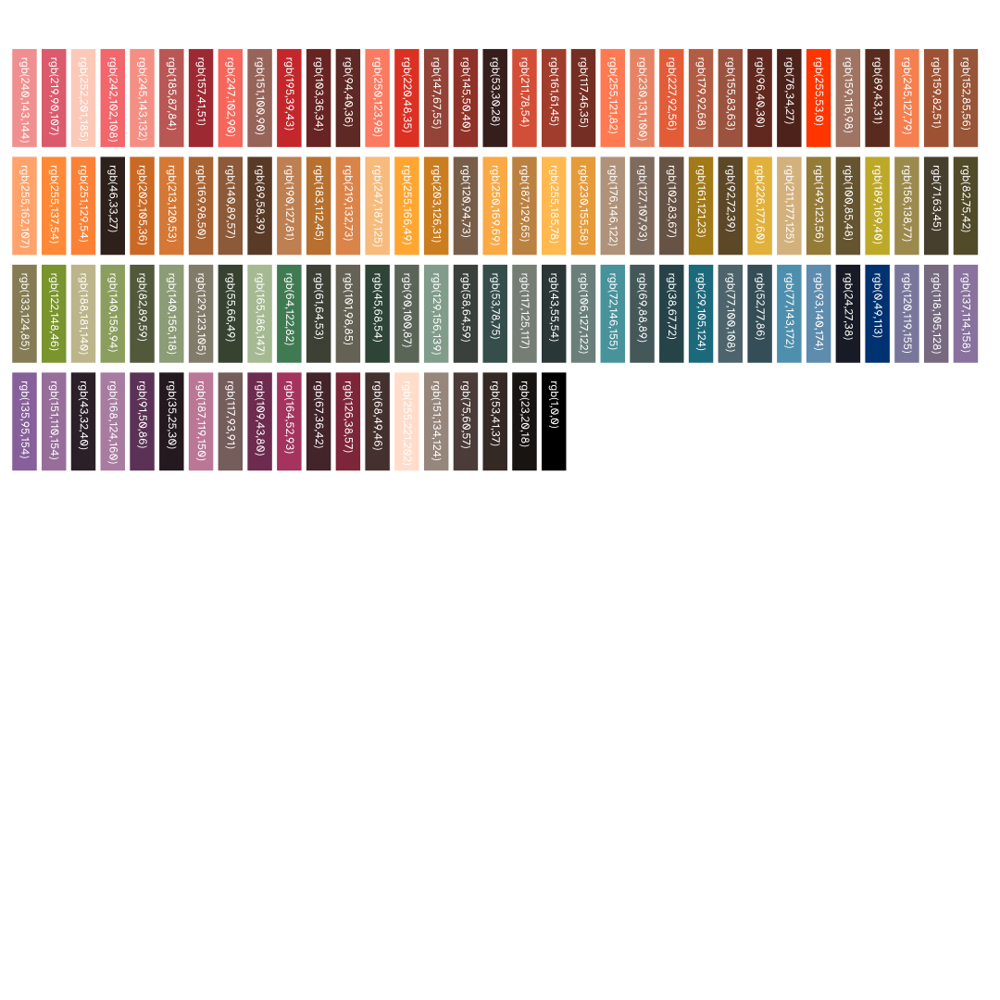
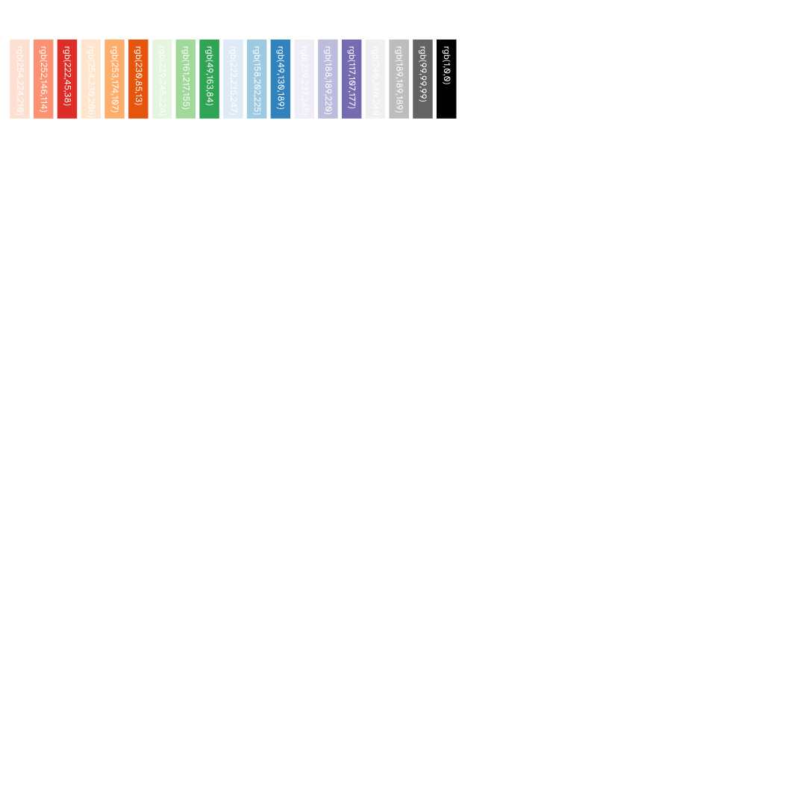
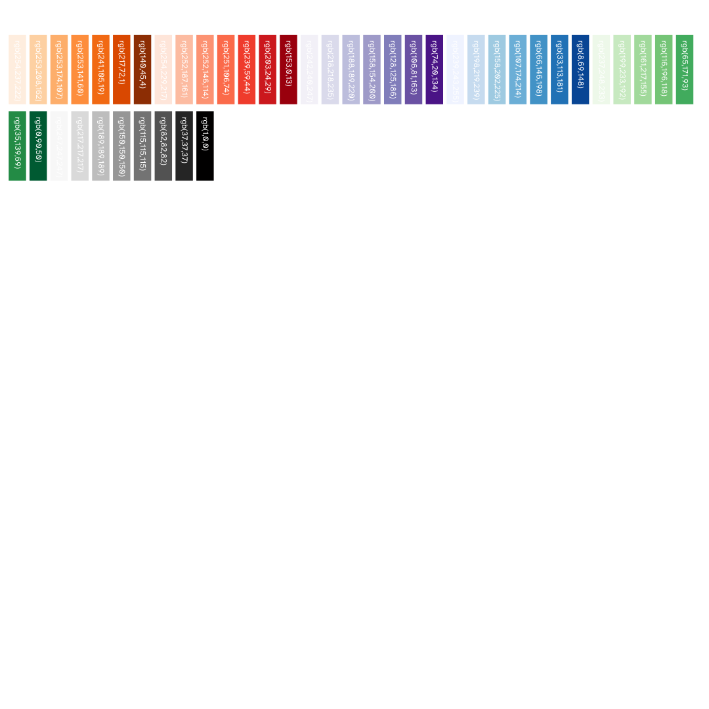
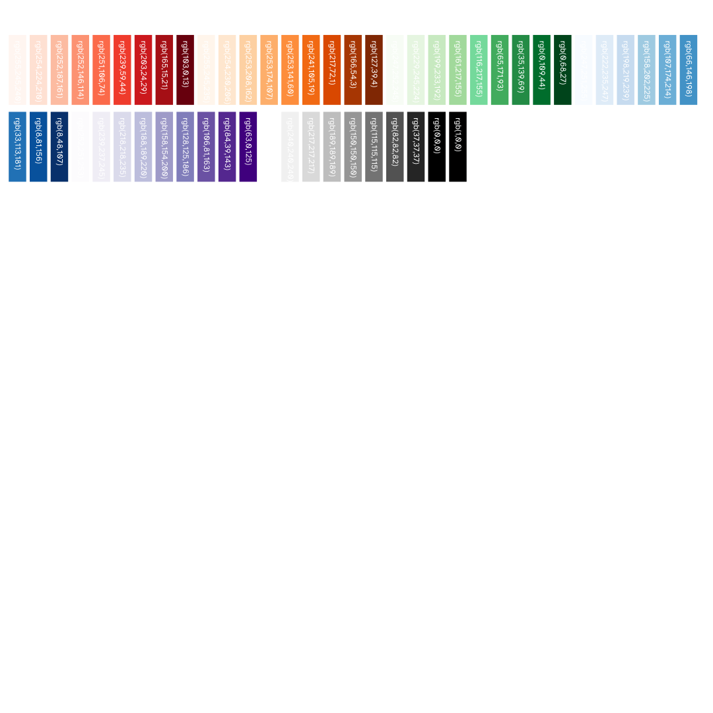
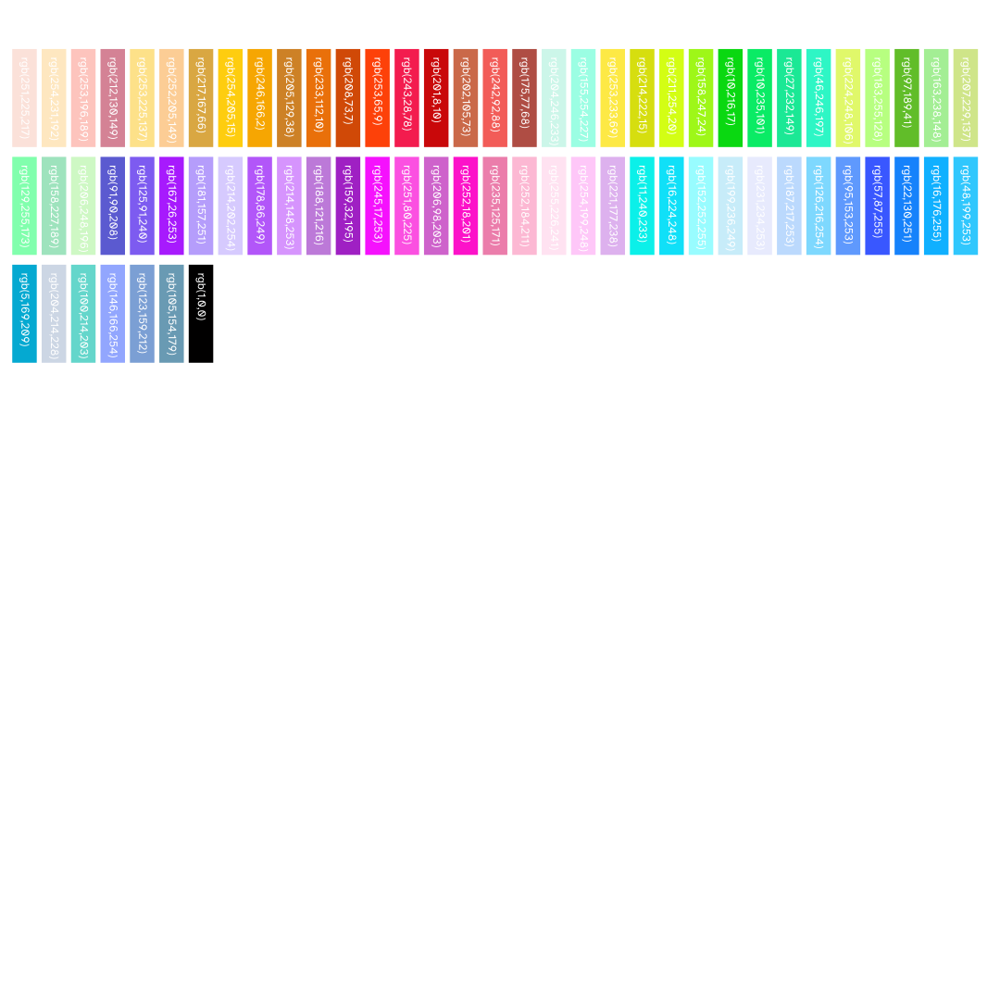
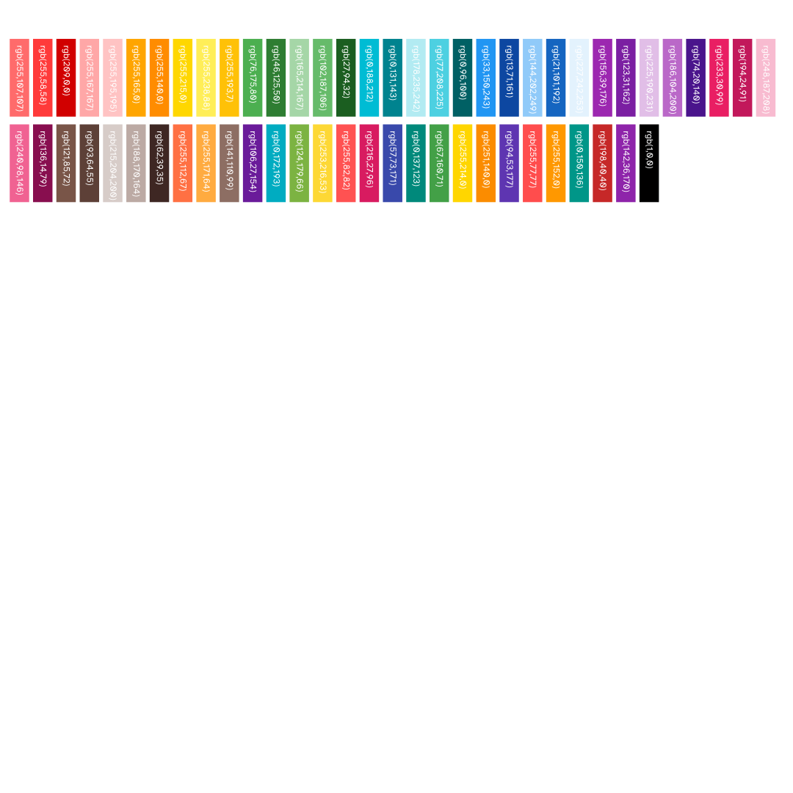
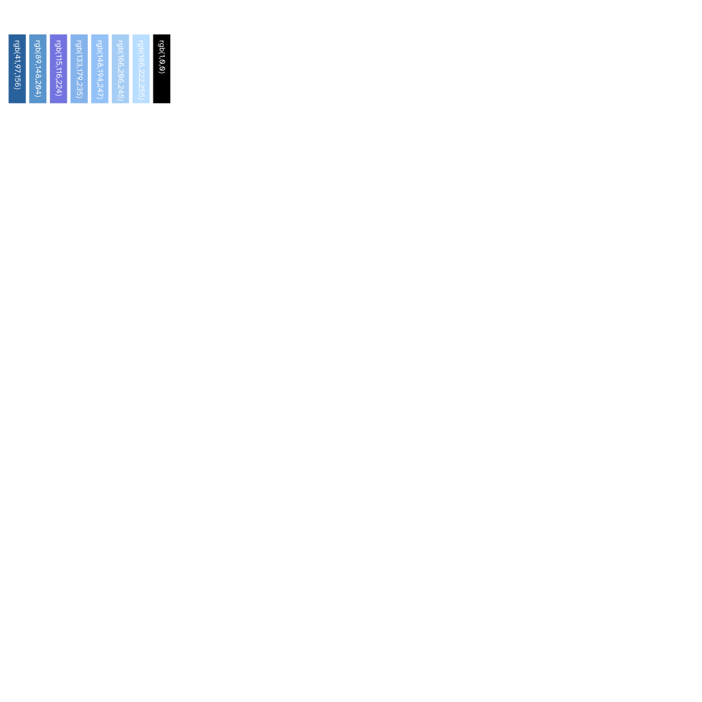
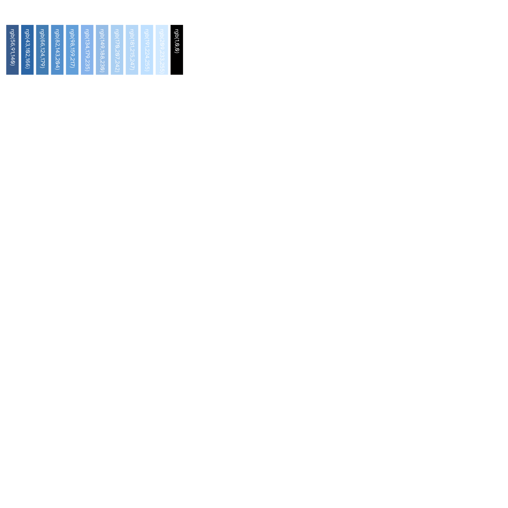

Color Palette Family 20260822
Regenerated 2026-08-22 izzi color palette family: one individual page per palette object behind the palette_kind selection tag in src/izzi-svg-color-palette.h (izzi, izzi hue, Japanese, ColorBrewer 3/7/9-class, CIECAM02, CIECAM16, CIECAM16 J=70, ESRI shallow/mid bathymetry) plus the band, tint, and RGB↔HSV parameter-space exercises. Prior round: palette-20260814-index (removed).
Izzi generation commit: 7328a622e963229d2be5dd1a2e94d1d1d7a34265 · 16 passes
-

Color palette — izzi (full)
The full default izzi palette: black-white-gray ramp, WCAG grays, curated accent colors, and named traditional colors (234 swatches).
-

Color palette — izzi hue
The hue-only izzi palette with black, white, and gray removed (213 swatches).
-

Color palette — Japanese (117)
Traditional colors of Japan, unsorted palette (117 swatches).
-

Color palette — ColorBrewer 2.0 3-class
Six single-hue 3-class sequential ColorBrewer 2.0 ramps (18 swatches).
-

Color palette — ColorBrewer 2.0 7-class
Six single-hue 7-class sequential ColorBrewer 2.0 ramps (42 swatches).
-

Color palette — ColorBrewer 2.0 9-class
Six single-hue 9-class sequential ColorBrewer 2.0 ramps (54 swatches).
-

Color palette — CIECAM02 (72)
CIECAM02 category-constrained color set (72 swatches).
-

Color palette — CIECAM16 (60)
CIECAM16 palette (60 swatches).
-

Color palette — CIECAM16 J=70 (88)
CIECAM16 palette at fixed lightness J=70 (88 swatches).
-

Color palette — ESRI shallow bathymetry (7)
ESRI shallow-water bathymetry ramp (7 swatches).
-

Color palette — ESRI mid bathymetry (11)
ESRI mid-water bathymetry ramp (11 swatches).
-

Color band — expand to larger (100)
Three 100-swatch band sweeps (orange/purple/red) in the RGB model, deterministic seeded generation (M0-DETERMINISM-001 closed).
-

Color tint — perceptual 1 (35)
35-swatch perceptual tint exercise (ciecam16j70-derived interpolation).
-

Color tint — perceptual 2 (84)
84-swatch perceptual tint exercise from the izzi color family.
-

RGB↔HSV grid 2 (42)
42-swatch RGB↔HSV quantization grid from the izzi color family.
-

RGB↔HSV grid 3 (266)
266-swatch RGB↔HSV quantization grid from the izzi color family.